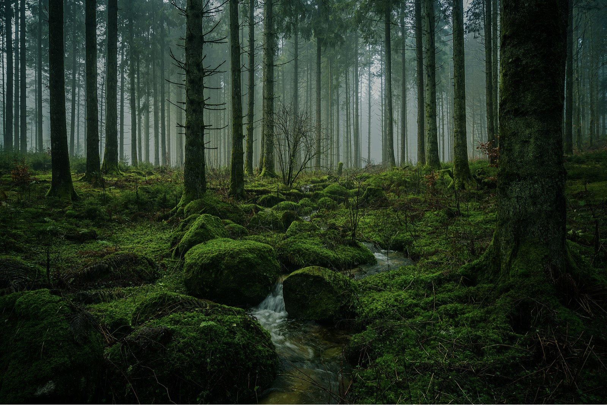

Forests are the lungs of our planet, providing us with fresh air and a home for countless species. The dense canopy, the rustling leaves, and the chirping birds create an ecosystem of harmony. Exploring a forest can be a therapeutic experience, allowing us to reconnect with nature and find inner peace.
Many people find comfort in hiking through lush green forests, breathing in the fresh earthy scent. Whether it's the Amazon rainforest or a quiet local woodland, nature's presence is undeniably calming and restorative.
Forests are essential to life on Earth. They absorb carbon dioxide, provide oxygen, and regulate the planet's temperature. Many indigenous communities rely on forests for their livelihood, and biodiversity thrives in these dense woodlands.
From the towering redwoods of California to the mystical black forests of Germany, every region has its own unique ecosystem. Sustainable forest management and conservation efforts are crucial to preserving these vital landscapes.
Forests cover about 31% of the Earth's land area and are home to 80% of the planet's terrestrial species.
They help regulate climate, filter air, and provide essential resources.
Back to Landscapes